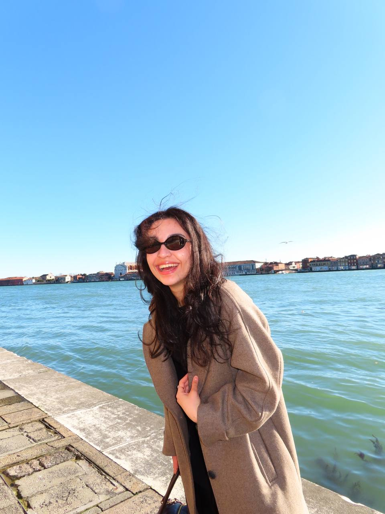
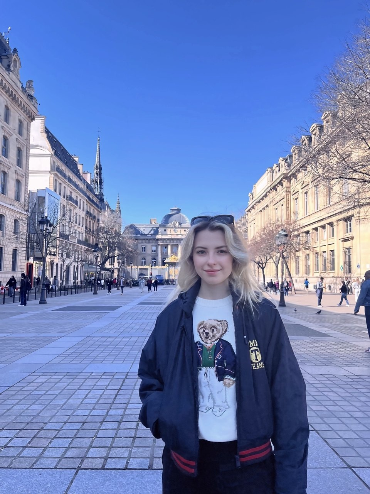

La Grande Bellezza
Paolo Sorrentino
"I was looking for the great beauty, but I didn't find it. This is how it always ends. With death. But first, there was life. Hidden beneath the blah, blah, blah. It is all settled beneath the chitter chatter and the noise. Silence and sentiment. Emotion and fear. The haggard, inconstant flashes of beauty. And then the wretched squalor and miserable humanity. All buried under the cover of the embarrassment of being in the world."
Beauty on the surface
The Great Beauty is precisely that — beauty on the surface, artificial, put on display. Sorrentino isn't searching for meaning behind it; he revels in the surface itself: the glitter of the parties, the gloss of Rome, the flawlessness of emptiness. There is no depth here to be uncovered — only a shining shell, and in that shine lies everything. Beauty doesn't conceal meaning; it replaces it.
Beneath the shell
In The Great Beauty, Rome is a labyrinth through which the protagonist wanders — a man who has lost his spirituality and is searching for it anew. Sorrentino's film is not about beauty: it is about the search for meaning in a world where everything has turned into decoration and pretense. Rome here is not a city but the protagonist's inner state: his search, his return to the origins where meaning was still alive. And only by rediscovering that meaning does he once again become capable of writing a novel.This website is built the same way — as a labyrinth in which to search for fundamental meanings →
Narratives
Three ways to walk the great beauty
Choose a guided route through the film's Rome, or follow a single thread — a theme or a kind of place — back to the locations it touches.
Guided routes
Pick a narrative and follow it, stop by stop
Lens 01 · Themes
Explore the themes that run through Rome and the film
Lens 02 · Typology
Discover the different typologies of Roman places
Lens 03 · Through the centuries
Six ages built these places
From the imperial amphitheatre to Sorrentino's present-day Rome, the locations span two thousand years.
The required thread
A historical timeline of the locations
The thirteen places ordered by the age that built them — two thousand years of Rome, gathered by the film into a single restless night.
The labyrinth, unfolded
Map & one-day itinerary
Thirteen places in Rome, threaded into a single day — the gold line follows the route in order, from the dawn fountain on the Janiculum to the galleries of the centro storico.
Hover a marker to preview · click it to enter the passage · the dashed line is the walking route
Choose your fighter
The people of Jep's Rome
A constellation around Jep Gambardella. Choose a face to read their bond with him, the scenes they live in, and the lines that linger. Then take the quiz and find out which one of them you are.
The quiz
Who are you in The Great Beauty?
Five questions, one Roman soul. Answer honestly — there are no wrong answers, only beautiful ones.
The team
The wanderers behind the labyrinth
Three students who built this passage through the Rome of The Great Beauty. Write to us — we read every line.

Maria Grigoryeva
maria.grigoryeva@studio.unibo.it
Elnara Gasanova
elnara.gasanova@studio.unibo.it